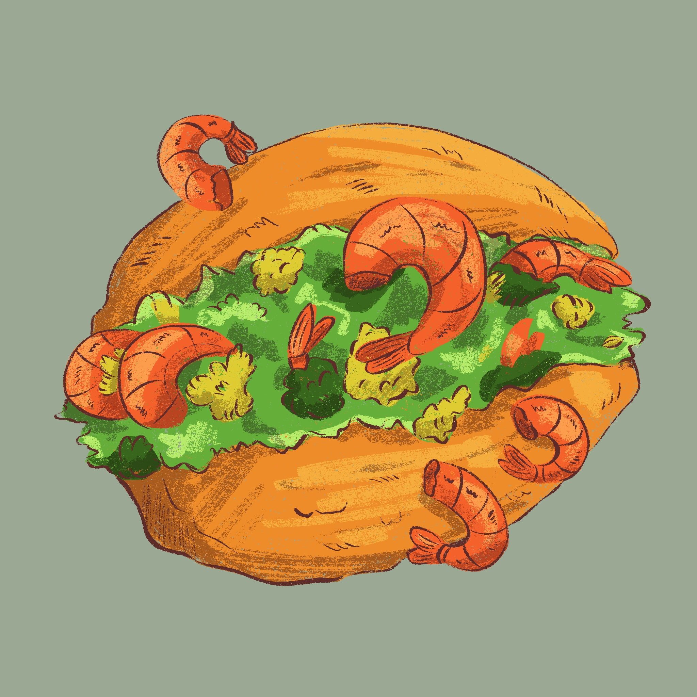
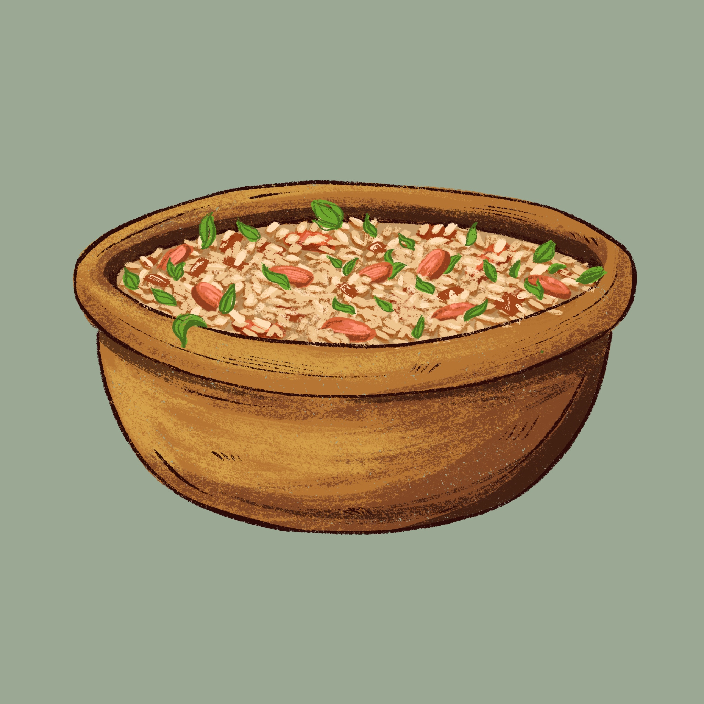

HISTÓRIA: O acarajé, bolinho de feijão-fradinho frito no azeite de dendê, tem origem na África Ocidental (povos iorubás) e chegou ao Brasil com mulheres escravizadas. Nomeado do iorubá akara (bola de fogo) e jê (comer), é sagrado no candomblé como oferenda a Iansã. Tornou-se símbolo da Bahia, vendido pelas tradicionais baianas.
INGREDIENTES: Feijão-fradinho, cebola, sal e azeite de dendê.

HISTÓRIA:O baião de dois é um prato típico do sertão cearense, criado no século XIX como solução prática e nutritiva para trabalhadores rurais. Surgiu da necessidade de evitar o desperdício, misturando arroz, feijão-de-corda, carne de sol e queijo coalho em uma única panela.
INGREDIENTES: Arroz, feijão-fradinho, bacon, linguiça calabresa, queijo coalho, cebola, coentro e cebolinha.